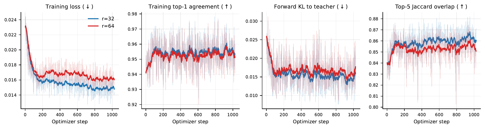

Overview
Recover the accuracy that PTQ loses
Inference keeps moving to lower precision to use the throughput of new accelerators, and aggressive PTQ can degrade model quality. QATFactory is an open-source framework for quantization-aware distillation (QAD) and quantization-aware reinforcement learning (QARL).
Training uses simulated quantization. Weights, and optionally activations, are rounded onto the target format's grid, while every matrix multiplication runs in BF16. A model can therefore train for a format its hardware cannot run: NVFP4 models train on H100 GPUs, which have no FP4 Tensor Cores.
The framework supports NVFP4, MXFP4 and llama.cpp's Q4_K. It trains dense and mixture-of-experts (MoE) models from 8B to 230B parameters, with full-parameter updates or low-rank adaptation (LoRA). Exported checkpoints load in vLLM and llama.cpp with no extra lossy conversion and no added inference cost.
Method
Framework overview
QATFactory supports two training workflows: quantization-aware distillation (QAD) and quantization-aware reinforcement learning (QARL). Both share the same quantization-aware layers, format implementations and export pipeline. In the forward pass, these layers apply a lossy quantize-dequantize transformation that reproduces inference-time numerics. In the backward pass, a straight-through estimator (STE) updates the continuous latent weights.
![(a) Quantization-aware distillation: training data feeds a frozen BF16 teacher and a quantization-aware student; a distillation loss between them updates the student. (b) Quantization-aware reinforcement learning: a low-precision vLLM rollout engine samples rollouts for each prompt, a reward or verifier scores them, and the quantization-aware learner sends its weights back to the rollout engine. Right: inside a quantization-aware layer, latent weights and activations pass through quantize-dequantize into simulated-quantized tensors that feed a BF16 matmul; the straight-through estimator approximates the gradient with respect to the latent weights by the gradient with respect to the simulated-quantized weights.](fig/qatfactory.png)
NumericsDeployment-aligned simulated quantization
The inference engine acts as the numerical specification: each layer follows the target format's values, block sizes and scaling rules. Under NVFP4, projections that vLLM and SGLang fuse, such as QKV and gate/up, share one tensor scale in training as they do in serving. MXFP4 and Q4_K need no such tying, because neither uses tensor-level scales.
QADQuantization-aware distillation
The quantized student learns to match its frozen original model by minimizing forward KL divergence, on responses the original model generated for Open Perfect Blend prompts. Full-parameter QAD updates every quantized weight. LoRA-QAD shares one frozen base between teacher and student, trains only the adapters and quantizes the merged weight. For MoE models, it merges and quantizes one expert at a time to bound peak memory.
QARLQuantization-aware reinforcement learning
A vLLM engine samples GRPO rollouts from the packed NVFP4 policy while the learner trains under simulated quantization. After each step, the learner packs its weights in the engine's layout and syncs them, so the engine needs no requantization.
ExportEngine-native checkpoints
Export packs weights and scales into each engine's native layout: vLLM compressed-tensors checkpoints for NVFP4 and MXFP4, and a llama.cpp GGUF file for Q4_K. NVFP4 activation scales are tracked during training and saved, so no calibration pass runs.
| Format | NVFP4 | MXFP4 | Q4_K |
|---|---|---|---|
| Deployment precision | W4A4 | W4A4 | W4A16, weight-only |
| Element | E2M1 (FP4) | E2M1 (FP4) | Unsigned INT4 |
| Block size | 16 | 32 | 32, in a 256 super-block |
| Scales | Block E4M3, tensor FP32 | Block E8M0 | Block 6-bit, super-block FP16 |
| Symmetry | Symmetric | Symmetric | Asymmetric |
| Bits per weight | 4.50 | 4.25 | 4.50 |
| Training precision | W4A16 or W4A4 | W4A16 or W4A4 | W4A16 |
| Engines | vLLM, SGLang | vLLM, SGLang | llama.cpp |
Supported formats. Bits per weight include element codes and scale metadata.
Key findings
What we learned training in low precision
Every quantized checkpoint below is exported to its engine and evaluated there: vLLM for NVFP4 and MXFP4, llama.cpp for Q4_K. KL divergence to the unquantized model is measured on UltraChat, the Pile and WikiText.
01Does QAD beat post-training quantization across formats, scales and architectures?
Yes. In every model and format tested, exported QAD checkpoints reach higher average accuracy and lower mean KL divergence than the post-training baselines run for that setting.
Training stays stable on every model, including the 230B-scale MiniMax-M2.7. The gap is widest on coding. On Qwen3.5-9B under NVFP4, QAD scores 83.0 on LiveCodeBench, where the best baseline scores 66.0.
Average accuracy. Each group averages a different benchmark set, so compare within a row only. Every Table 2 checkpoint is served W4A4, and its two QAD markers differ only in whether training quantized activations. MiniMax-M2.7's reference is its FP8 release. The axis starts at 40.
| Checkpoint | Qwen3.5-9B, NVFP4 | Qwen3.5-9B, MXFP4 | DS-R1-Distill-Llama-8B, NVFP4 | DS-R1-Distill-Llama-8B, MXFP4 | ||||
|---|---|---|---|---|---|---|---|---|
| Avg ↑ | KL ↓ | Avg ↑ | KL ↓ | Avg ↑ | KL ↓ | Avg ↑ | KL ↓ | |
| BF16 reference | 71.7 | — | 71.7 | — | 49.4 | — | 49.4 | — |
| RTN | 65.4 | 0.0778 | 44.3 | 0.1792 | 46.2 | 0.1566 | 41.8 | 0.3321 |
| GPTQ | 63.3 | 0.1399 | 56.4 | 0.1568 | 46.4 | 0.1334 | 41.9 | 0.2791 |
| QAD, trained W4A16 | 68.9 | 0.0682 | 57.8 | 0.1510 | 47.7 | 0.1113 | 43.7 | 0.2305 |
| QAD, trained W4A4 | 68.9 | 0.0746 | 66.0 | 0.1438 | 46.6 | 0.1148 | 44.0 | 0.2090 |
Average accuracy over GPQA-Diamond, MMLU-Pro, MMMLU, WinoGrande, HellaSwag, AIME25, LiveCodeBench and BigCodeBench, and mean KL divergence to BF16. Every quantized checkpoint is served W4A4. Bold marks the best quantized result per column.
| Checkpoint | GPQA-D ↑ | AIME25 ↑ | BCB ↑ | LCB ↑ | Avg ↑ | KL ↓ |
|---|---|---|---|---|---|---|
| Qwen3-30B-A3B, NVFP4 | ||||||
| BF16 reference | 62.12 | 73.33 | 39.00 | 93.00 | 66.86 | — |
| RTN | 59.09 | 69.33 | 38.33 | 90.33 | 64.27 | 0.03417 |
| QAD | 61.11 | 72.67 | 38.33 | 91.00 | 65.78 | 0.03242 |
| MiniMax-M2.7 (230B), NVFP4 | ||||||
| FP8 reference | 78.8 | 78.0 | 22.0 | 88.7 | 66.9 | — |
| RTN | 80.3 | 78.0 | 22.0 | 86.0 | 66.6 | 0.0779 |
| QAD | 82.8 | 82.7 | 23.3 | 87.7 | 69.1 | 0.0697 |
| Qwen3-8B, Q4_K | ||||||
| BF16 reference | 60.10 | 66.67 | — | — | 63.39 | — |
| MSE-optimal PTQ | 56.06 | 62.67 | — | — | 59.37 | 0.0628 |
| QAD | 59.09 | 63.33 | — | — | 61.21 | 0.0436 |
| Qwen3.5-9B, Q4_K | ||||||
| BF16 reference | 85.86 | 54.00 | — | — | 69.93 | — |
| MSE-optimal PTQ | 77.27 | 38.00 | — | — | 57.64 | 0.0835 |
| QAD | 79.80 | 49.33 | — | — | 64.57 | 0.0623 |
For the MoE models, Avg covers the four benchmarks and KL is the mean over three corpora. For Q4_K, Avg covers GPQA-D and AIME25, KL is measured on WikiText, and the PTQ baseline is llama.cpp's MSE-optimal quantizer.


02W4A4 deployment: should training quantize activations too?
It depends on the format. For NVFP4, weight-only W4A16 training matches or beats W4A4 training. MXFP4 benefits substantially from W4A4 training.
On Qwen3.5-9B under MXFP4, W4A4 training raises average accuracy from 57.8 to 66.0. Under NVFP4 on the same model, the two averages tie and W4A16 training gives the lower KL.
| Training precision | Qwen3.5-9B, NVFP4 | Qwen3.5-9B, MXFP4 | DS-R1-Distill-Llama-8B, NVFP4 | DS-R1-Distill-Llama-8B, MXFP4 | ||||
|---|---|---|---|---|---|---|---|---|
| Avg ↑ | KL ↓ | Avg ↑ | KL ↓ | Avg ↑ | KL ↓ | Avg ↑ | KL ↓ | |
| W4A16, weights only | 68.9 | 0.0682 | 57.8 | 0.1510 | 47.7 | 0.1113 | 43.7 | 0.2305 |
| W4A4, weights and activations | 68.9 | 0.0746 | 66.0 | 0.1438 | 46.6 | 0.1148 | 44.0 | 0.2090 |
Both rows are QAD checkpoints served W4A4; they differ only in whether training quantized activations.
03Can LoRA make QAD cheaper without losing quality?
It saves memory, not quality. Rank-16 LoRA cuts GPU memory 2.9× on Qwen3.5-9B at an 8K sequence length. On aggregate metrics every rank still trails full-parameter QAD, and a larger rank does not close the gap.
LoRA drops the separate teacher copy and keeps gradients and optimizer states only for the adapters. Quality does not rise with rank. Rank 4 gives the best LoRA average accuracy, and rank 256 the lowest.
Training memory, Qwen3.5-9B at 8K
| GiB | Full QAD | LoRA, r=16 |
|---|---|---|
| Teacher weights, BF16 | 16.68 | 0.00 |
| Student weights, frozen BF16 | 3.79 | 16.68 |
| Student weights, trainable FP32 | 25.77 | 0.16 |
| Gradients, FP32 | 25.77 | 0.16 |
| Optimizer states, FP32 | 51.55 | 0.32 |
| Activations | 32.97 | 35.37 |
| Temporary | 10.00 | 4.50 |
| GPU memory in use | 166.53 | 57.19 |
Training memory for Qwen3.5-9B at an 8K sequence length.
| Checkpoint | Avg ↑ | KL ↓ |
|---|---|---|
| BF16 reference | 71.7 | — |
| Full QAD | 68.9 | 0.0682 |
| LoRA, r=4 | 68.0 | 0.0722 |
| LoRA, r=16 | 67.8 | 0.0735 |
| LoRA, r=64 | 67.9 | 0.0714 |
| LoRA, r=256 | 67.6 | 0.0777 |
Qwen3.5-9B NVFP4, same eight benchmarks and three KL corpora as Finding 1.

| Checkpoint | Benchmark accuracy ↑ | KL divergence ↓ | |||||||||||
|---|---|---|---|---|---|---|---|---|---|---|---|---|---|
| GPQA-D | MMLU-P | MMMLU | WinoG. | HellaS. | AIME25 | LCB | BCB | Avg | UltraChat | Pile | WikiText | Avg | |
| BF16 reference | 85.4 | 79.9 | 90.5 | 92.3 | 68.0 | 86.0 | 85.3 | 41.0 | 78.6 | — | — | — | — |
| RTN | 79.3 | 79.9 | 89.1 | 93.0 | 63.7 | 84.7 | 86.3 | 38.7 | 76.8 | 0.0327 | 0.0235 | 0.0336 | 0.0299 |
| LoRA, r=32 | 82.8 | 79.9 | 90.5 | 93.7 | 67.7 | 86.7 | 86.3 | 39.3 | 78.4 | 0.0281 | 0.0205 | 0.0293 | 0.0260 |
| LoRA, r=64 | 79.8 | 79.9 | 87.4 | 93.3 | 65.7 | 84.0 | 85.7 | 36.0 | 76.5 | 0.0286 | 0.0204 | 0.0295 | 0.0262 |
Muse-Glimmer 30B under NVFP4, a dense model with a small NVFP4 quantization gap. Both adapters train for one epoch at a learning rate of 5×10−5. The RTN row is the same quantized base with no adapter. Bold marks the best quantized value per column.

04At a fixed training token budget, should QAD train on fewer, longer samples or more, shorter samples?
Fewer, longer samples. In the paper's test, long samples are cut at 32K tokens and short ones at 4K. At the same training token budget, the long-sample runs score 1.9 points higher in average accuracy, pooled over four comparisons.
32K training wins three comparisons and ties the fourth. It improves AIME25 and LiveCodeBench-v6 every time, while BigCodeBench drops in both W4A4 comparisons. QAD also transfers across domains. Code-trained checkpoints match or beat math-trained ones on AIME25 in three of four settings.
Average of AIME25, BigCodeBench and LiveCodeBench-v6 for Qwen3.5-9B NVFP4 QAD. Each 4K and 32K pair sees the same number of training tokens. The axis starts at 44.
| Inference | Training data | Steps | Tokens (M) | AIME25 ↑ | BCB ↑ | LCB-v6 ↑ | Avg ↑ |
|---|---|---|---|---|---|---|---|
| BF16 | Teacher reference | — | — | 54.67 | 30.67 | 86.33 | 57.22 |
| W4A16 | Math, 4K | 5,264 | 336.7 | 47.33 | 28.67 | 79.00 | 51.67 |
| W4A16 | Math, 32K | 2,164 | 336.8 | 51.33 | 30.00 | 81.67 | 54.33 |
| W4A16 | Code, 4K | 5,264 | 307.9 | 46.67 | 30.67 | 79.67 | 52.34 |
| W4A16 | Code, 32K | 1,817 | 307.9 | 52.00 | 34.00 | 82.67 | 56.22 |
| W4A4 | Math, 4K | 5,264 | 336.7 | 42.00 | 25.33 | 72.00 | 46.44 |
| W4A4 | Math, 32K | 2,164 | 336.8 | 44.00 | 23.67 | 74.67 | 47.45 |
| W4A4 | Code, 4K | 5,264 | 307.9 | 45.33 | 26.33 | 77.67 | 49.78 |
| W4A4 | Code, 32K | 1,817 | 307.9 | 46.67 | 24.33 | 78.33 | 49.78 |
Qwen3.5-9B NVFP4 QAD. Each 4K and 32K pair sees the same number of training tokens. AIME25 averages five samples per problem.

05Is quantization-aware RL better than RL followed by quantization?
Yes, on both speed and quality. NVFP4 QARL trains at 123.2% of BF16 RL's throughput and scores 2.7 points higher on five math benchmarks than BF16 RL followed by RTN.
Rollouts dominate each step, and native NVFP4 weights shorten them. That gain more than offsets the slower sync, forward and backward stages. QARL stays within 1.3 points of BF16 RL and slightly beats it on AIME24.
Seconds per optimizer step
| Checkpoint | Train | Eval | Mean ↑ |
|---|---|---|---|
| Qwen3-8B-Base | — | BF16 | 21.0 |
| BF16 RL | BF16 | BF16 | 52.1 |
| BF16 RL, then RTN | BF16 | NVFP4 | 48.1 |
| QARL | NVFP4 | NVFP4 | 50.8 |
Mean accuracy over AIME24, AIME25, MATH500, OlympiadBench and GSM8K. Qwen3-8B-Base trains on DeepMath-103K for 1,024 steps, on four NVIDIA B200 GPUs, because native NVFP4 rollouts need Blackwell Tensor Cores.
| Seconds per step | NVFP4 QARL | BF16 GRPO |
|---|---|---|
| Weight sync | 0.99 | 0.73 |
| vLLM rollout | 28.31 | 37.46 |
| Training forward | 1.52 | 0.98 |
| Backward | 3.14 | 2.66 |
| Total | 33.96 | 41.83 |
Wall-clock time per optimizer step. Backward includes activation-checkpoint recomputation.

Takeaways
Practical advice for low-precision training
Choose activation precision per format
Deployment precision alone should not set training precision. For NVFP4 W4A4 deployment, W4A16 training generally gives better aggregate accuracy and KL divergence. MXFP4 benefits from W4A4 training. Compare exported checkpoints rather than rely only on training-time metrics.
Evidence: Finding 02 →Use LoRA for memory, not for quality
LoRA cuts training memory substantially. A larger adapter rank does not reliably improve accuracy or KL divergence, and it does not close the gap to full-parameter QAD.
Evidence: Finding 03 →Prefer longer sequences at a fixed budget
Fewer 32K sequences generalize better overall than more 4K sequences with the same number of tokens. QAD updates also transfer across domains. In the paper's experiments, code-domain training improved math reasoning.
Evidence: Finding 04 →Train RL in the deployment format
When native low-precision rollouts are available, combine quantized rollouts with quantization-aware updates. In the paper's NVFP4 experiment, this improved both speed and quality over BF16 RL followed by PTQ.
Evidence: Finding 05 →Citation
BibTeX
@misc{xu2026qatfactory,
title = {QATFactory: A Versatile, Deployment-Aligned Framework for Quantization-aware Training and
Distillation of LLMs},
author = {Xu, Weili and Li, Jisen and Jian, Yuqing and Li, Chenxi and Sha, Zhizhou and Yu, Yifan and
Wu, Qingyang and Xu, Chenfeng and Zhou, Zhongzhu and Zhang, Tianyi and Athiwaratkun, Ben},
year = {2026},
eprint = {2609.39223},
archivePrefix = {arXiv},
primaryClass = {cs.LG},
url = {https://arxiv.org/abs/2609.39223}
}